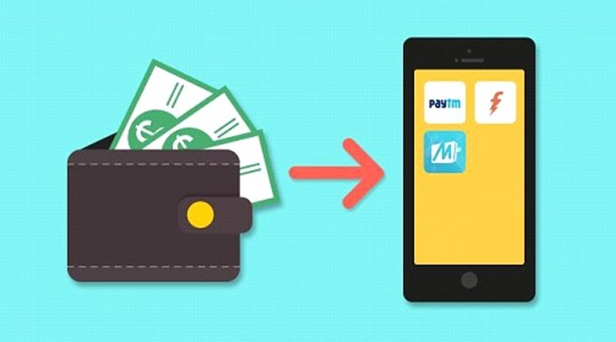

- 
O processo desse projeto
Para o nosso projeto final na matéria Grandes Desafios da Engenharia nós tivemos que elaborar um mini artigo acadêmico acerca de tema relacionado à Ciência, Tecnologia e Sociedade. Sua estrutura e formatação deveriam seguir um código para a elaboração de artigos chamado CTS. Durante um período tivemos diversas aulas, como também cases, que são apresentações a respeito de temas predefinidos que tinham a ver com os que precisávamos para a elaboração do trabalho acadêmico.
Em meu artigo explorei o potencial da bitcoin como um artifício de maior distribuição de renda dado o fato de que se popularizada, ela se tornaria uma moeda muito mais acessivel e facil de ser trocada que o papel moeda e reservas de crédito. O artigo é embasado com informações de muitos dos pioneiros no estudo do fenomeno das criptomoedas.